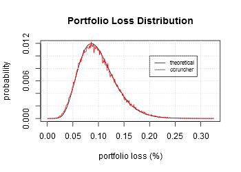
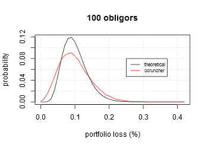

| CCRUNCHER |
Open-Source Tool for Credit Risk Modeling |
Case Studies
Often, credit portfolios don't fulfill some assumptions used to evaluate their credit risk. This is emphasized in the portfolio of SMEs. These portfolios deals with large number of obligors organized in economic sectors, with a variety of products and amounts, and with a rating system composed by multiple levels (AAA, AA, ...).
In the following section we review the Large Homogeneous Pool approach and we replicate it using CCruncher. Then, we see an example where the LHP fails and how we can use CCruncher to evaluate the credit risk correctly.
Large Homogeneous Pool
Vasicek [3] derived an analytical formula for the loss distribution of an infinitely large portfolio called the large homogeneous portfolio (LHP) approximation. Later, Schloegl and O'Kane [2] extended it to the t-Student case. The assumptions of these approximations are: 1) one-factor model, 2) infinitely large portfolio, 3) equals ratings, 4) equals exposures. The density, in the Gaussian case, is:
where w is the factor loading, p is the probability of default (PD), and x ∈ [0,1] represents the percentage of loss in the portfolio.
File samples/test04.xml contains a portfolio composed of 1000
identical obligors (same rating and factor) where every one of them owe 1€
to 1 year. The common default probability is 10% and the factor
loading is 20%. This problem fulfills the LHP approach.
We use CCruncher to determine the distribution of this case and compare
it with the analytical solution:
bin/ccruncher -f --hash=1000 --threads=2 -D numsims=100000 --path=data/test04 samples/test04.xml
We use the R project to do the statistical tasks:
pf <- function(x, p, w) {
ifelse(x <= 0, 0, pnorm((qnorm(x)*sqrt(1-w^2)-qnorm(p))/w))
}
df <- function(x, p, w) {
ifelse(x <= 0, 0, sqrt(1-w^2)/w * exp(qnorm(x)^2/2 - (qnorm(p)-sqrt(1-w^2)*qnorm(x))^2/(2*w^2)))
}
portfolio = read.csv("data/test04/portfolio.csv", header=TRUE, sep=",")
n = length(portfolio[,1])
y = tabulate(portfolio[,1]+1)/n
x = ((1:length(y))-1)/1000
plot(x, df(x,0.1,0.2)/1000, type='l', col=1,xlab="portfolio loss (%)", ylab="probability")
lines(x, y, type='l', col=2)
title("Portfolio Loss Distribution", cex=0.7)
legend(0.20, 0.01, c("theoretical","ccruncher"), lty=c(1,1), col= 1:2, bg="white", cex=0.7)
grid()
kstest = ks.test(portfolio[1:1000,1]/1000, pf, p=0.1, w=0.2)
kstest$p.value
|
We use the Kolmogorov-Smirnof test to check that the distribution estimated by CCruncher is similar to the theoretical distribution. The first 1000 simulations gives a p-value bigger than 0.25, sufficient to assert that it is a good approximation. If we consider more simulations (eg. 100000) in the Kolmogorov-Smirnov test then the p-value drops to 0. The reason is that the simulated portfolio is finite (1000 obligors), but the theoretical distribution assumes an infinite portfolio. Increasing the number of simulated obligors improves the approximation. |  |
Breaking Assumptions

We copy samples/test04.xml to samples/test04-1.xml
and we remove the obligors with id bigger than 100. The resulting portfolio
has only 100 obligors. We approximate the loss distribution using CCruncher
and compare with the theoretical LHP loss distribution (see graphic).
Observe that, in this case, the LHP loss distribution is a bad approximation
because the infinitely large portfolio assumption is not satisfied.
You can try to force the remaining assumptions with similar results. Fortunately, CCruncher don't rely on rigid assumptions and has some additional features that make it appealing such as: 1) allows multiple factors, 2) allows multiple rating levels, 3) an obligor can have multiple assets, 4) each of them with they own exposures and recoveries, 5) that can be stochastic values, 6) and vary over the time. Finally, 7) losses can be simultaneously computed for any sub-portfolio that you define (see segmentations) in order to disaggregate the risk.
References
- Bluhm, C., Overbeck, L., Wagner, C. (2003). An Introduction to Credit Risk Modeling. Chapman & Hall/CRC Financial Mathematics Series; 2nd Reprint; CRC Press
- Schloegl, L., and O'Kane, D. (2005). A note on the large homogeneous portfolio approximation with the Student-t copula. Finance and Stochastics, 577-584.
- Vasicek, O. (1987). Probability of Loss on Loan Portfolio. Memo, KMV Corporation.